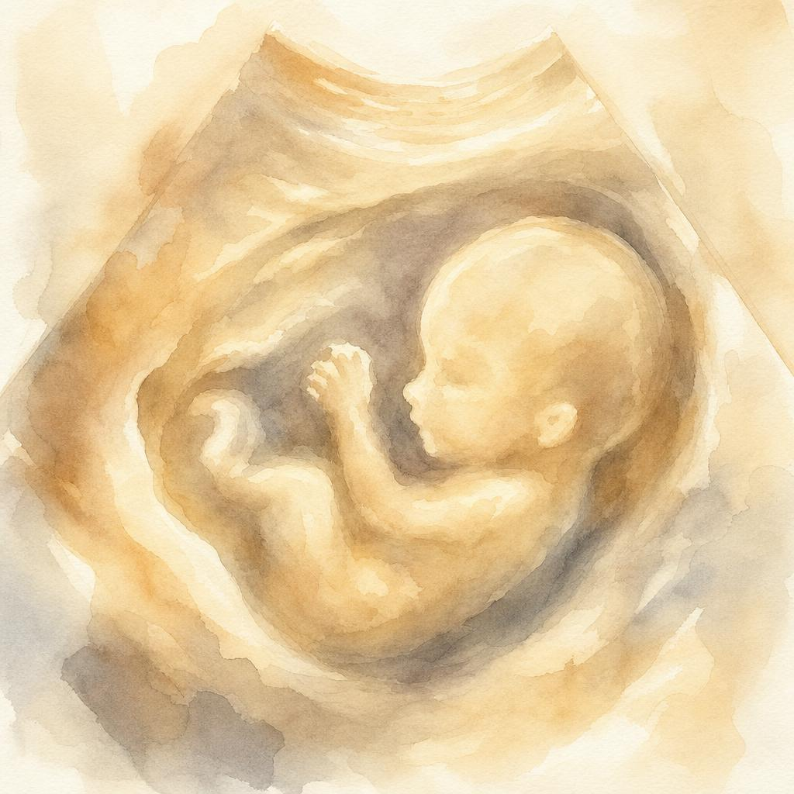
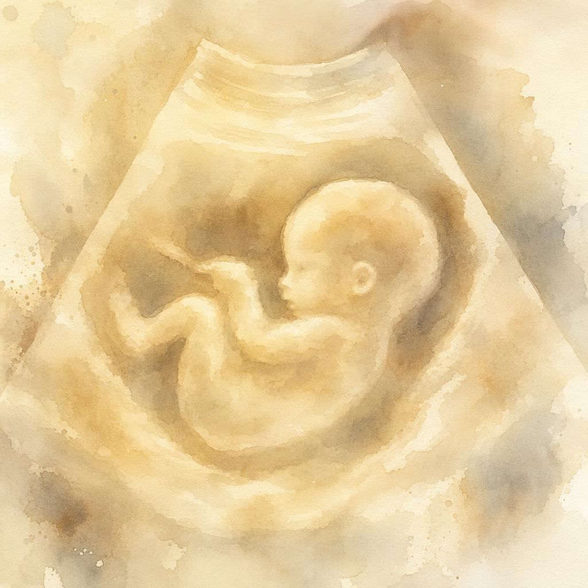

임밍아웃
우리에게 소중한 아기가 찾아왔어요
기쁜 마음으로 임신 소식을 전합니다.
celebration
기쁜 소식 전해요
저희에게 소중한 생명이 찾아왔어요.
함께 축복해 주세요!
child_care
favorite
우리의 이야기
6 Weeks
처음 알게 된 날
The very first time we saw our tiny miracle. Just a speck on the screen, but already filling our hearts.

12 Weeks
첫 심장 소리
Dancing around and showing off for the camera. Waving hello to the world for the first time!

20 Weeks
오늘의 마음
Look at that sweet profile! Everything is perfect, and the kicks are getting stronger every day.
edit_note
사랑하는 가족께,
설레고 벅찬 마음으로 임신 소식을 전해요.
작은 심장 소리를 들은 날부터 하루하루 감사한 마음으로 지내고 있어요.
따뜻한 응원과 축복 부탁드려요.
건강하게 만나요 💛
한 줄 축하
축복의 마음을 남겨주시면 큰 힘이 됩니다.
check_circle
메시지가 저장되었어요!